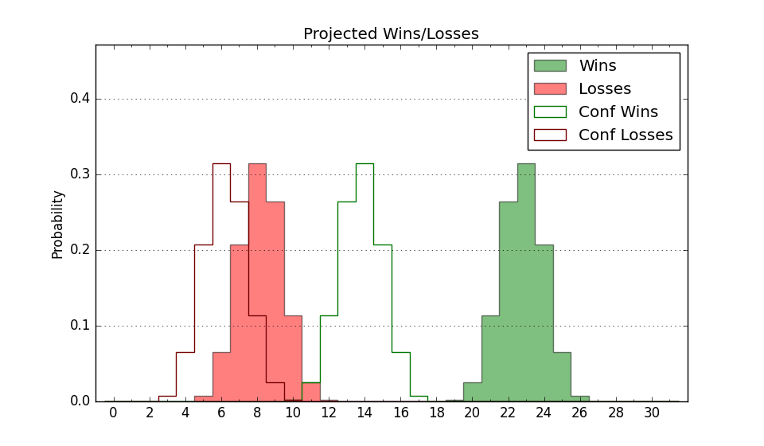

| Home | Game Probabilities | Conferences | Preseason Predictions | Odds Charts | NCAA Tournament |
| City: | Milwaukee, Wisconsin | |
| Conference: | Big East (9th)
| |
| Record: | 7-14 (Conf) 12-20 (Overall) | |
| Ratings: | Comp.: 9.8 (91st) Net: 9.8 (91st) Off: 111.8 (125th) Def: 102.0 (61st) SoR: 0.0 (98th) |
| Remaining | ||||||
|---|---|---|---|---|---|---|
| Date | Opponent | Win Prob | Pred. | |||
| Previous | Game Score | |||||
| Date | Opponent | Win Prob | Result | Off | Def | Net |
| 11/3 | Albany (330) | 96.7% | W 80-53 | -19.3 | 24.4 | 5.2 |
| 11/5 | Southern (281) | 93.7% | W 100-82 | 5.8 | -10.3 | -4.5 |
| 11/9 | (N) Indiana (37) | 23.3% | L 77-100 | -5.4 | -18.6 | -24.0 |
| 11/12 | Little Rock (310) | 95.5% | W 89-49 | 8.6 | 14.6 | 23.2 |
| 11/15 | Maryland (128) | 76.5% | L 82-89 | -8.5 | -15.0 | -23.5 |
| 11/19 | Dayton (82) | 60.8% | L 71-77 | -16.6 | 2.6 | -13.9 |
| 11/22 | Central Michigan (277) | 93.5% | W 85-71 | 1.0 | -5.3 | -4.3 |
| 11/28 | (N) Oklahoma (45) | 29.4% | L 74-75 | 9.5 | -1.5 | 8.0 |
| 12/2 | Valparaiso (156) | 81.3% | W 75-72 | -12.8 | 4.6 | -8.1 |
| 12/6 | @Wisconsin (27) | 10.6% | L 76-96 | -2.7 | -0.9 | -3.6 |
| 12/13 | @Purdue (7) | 4.3% | L 59-79 | -6.8 | 7.2 | 0.5 |
| 12/17 | Georgetown (85) | 62.7% | L 69-78 | -2.6 | -18.9 | -21.5 |
| 12/20 | @Creighton (75) | 28.0% | L 63-84 | -20.3 | 3.6 | -16.7 |
| 12/30 | Seton Hall (54) | 50.1% | L 73-79 | 2.3 | -12.6 | -10.3 |
| 1/4 | @Connecticut (12) | 6.6% | L 57-73 | -10.7 | 9.5 | -1.2 |
| 1/7 | Xavier (99) | 68.2% | W 66-65 | -18.1 | 14.8 | -3.3 |
| 1/10 | Villanova (40) | 39.4% | L 73-76 | 10.6 | -10.1 | 0.5 |
| 1/13 | @St. John's (18) | 7.6% | L 68-92 | 0.8 | -5.6 | -4.8 |
| 1/16 | @DePaul (104) | 40.7% | L 75-80 | 16.5 | -22.4 | -5.9 |
| 1/19 | Providence (66) | 55.1% | W 105-104 | 18.1 | -15.2 | 2.9 |
| 1/23 | @Butler (73) | 27.9% | L 76-87 | 4.3 | -13.1 | -8.8 |
| 1/27 | Creighton (75) | 56.9% | W 86-62 | 18.0 | 16.6 | 34.7 |
| 1/31 | @Seton Hall (54) | 22.8% | L 64-69 | 10.5 | -2.7 | 7.7 |
| 2/7 | Butler (73) | 56.8% | W 70-55 | -4.8 | 24.9 | 20.1 |
| 2/10 | @Villanova (40) | 16.0% | L 74-77 | 4.7 | 2.7 | 7.5 |
| 2/14 | @Xavier (99) | 38.6% | L 88-96 | 13.1 | -24.3 | -11.2 |
| 2/18 | St. John's (18) | 21.9% | L 70-76 | 4.2 | -1.0 | 3.2 |
| 2/24 | @Georgetown (85) | 33.1% | W 76-60 | 13.5 | 18.1 | 31.7 |
| 3/1 | DePaul (104) | 70.0% | L 51-62 | -24.2 | -2.4 | -26.7 |
| 3/4 | @Providence (66) | 26.5% | W 78-56 | 1.2 | 37.7 | 39.0 |
| 3/7 | Connecticut (12) | 19.4% | W 68-62 | 3.7 | 20.9 | 24.6 |
| 3/11 | (N) Xavier (99) | 53.7% | L 87-89 | 3.2 | -8.6 | -5.5 |
| Stats & Trends | |||||
|---|---|---|---|---|---|
| Current | Day | Week | Month | Season | |
| Composite | 9.8 | +0.0 | +0.0 | +2.6 | -7.0 |
| Comp Rank | 91 | -- | -2 | +15 | -46 |
| Net Efficiency | 9.8 | +0.0 | +0.0 | +2.7 | -- |
| Net Rank | 91 | -- | -2 | +15 | -- |
| Off Efficiency | 111.8 | +0.0 | +0.2 | +1.3 | -- |
| Off Rank | 125 | +1 | +7 | +20 | -- |
| Def Efficiency | 102.0 | -0.0 | -0.2 | +1.4 | -- |
| Def Rank | 61 | -1 | -7 | +20 | -- |
| SoS Rank | 43 | -- | -8 | -4 | -- |
| Exp. Wins | 12.0 | -- | -- | +1.1 | -7.3 |
| Exp. Conf Wins | 7.0 | -- | -- | +1.1 | -4.8 |
| Conf Champ Prob | 0.0 | -- | -- | -- | -5.8 |

| Advanced Stats | ||
|---|---|---|
| Stat | Value | Rank |
| Off Eff FG % | 0.529 | 121 |
| Off Ast Ratio | 0.171 | 58 |
| Off ORB% | 0.315 | 144 |
| Off TO Rate | 0.130 | 77 |
| Off FT Ratio | 0.358 | 169 |
| Def Eff FG % | 0.481 | 59 |
| Def Ast Ratio | 0.142 | 141 |
| Def ORB% | 0.317 | 246 |
| Def TO Rate | 0.182 | 15 |
| Def FT Ratio | 0.305 | 79 |